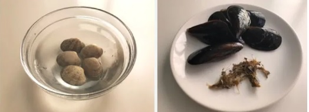
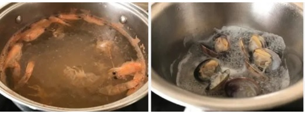
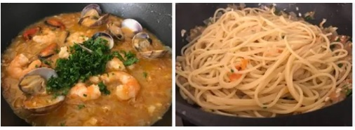
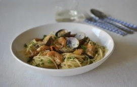

Antes de comenzar con el cocinado de los espaguetis con marisco es necesario limpiar bien las almejas y los mejillones, para librarnos de los restos de arena y suciedad que suelen contener (especialmente las primeras).
Para limpiar las almejas.Bajo un chorro de agua fría lavamos las almejas al tiempo que frotamos las cochas con un cepillo, suavemente. Las depositamos en un recipiente con abundante agua y sal, lo cubrimos con un paño y las dejamos reposar un par de horas en la nevera. Si hace calor las metemos en la nevera, si hace frío no hay necesidad.Con ayuda de una espumadera retiramos las almejas del agua, sin remover para que la arena que han soltado se quede en el fondo del recipiente y no ensucie las almejas.
Para limpiar los mejillones.Bajo un chorro de agua fría lavamos los mejillones al tiempo que frotamos las conchas con un cepillo con el que retirar las adherencias que puedan tener. Retiramos las barbas con un cuchillo afilado o con unas tijeras. Enjuagamos bien y reservamos en la nevera hasta el momento de la cocción.En dos cacitos distintos colocamos las almejas y los mejillones y añadimos tres cucharadas de agua en cada uno de ellos. Colocamos sobre el fuego, a media potencia, y dejamos que se abran las conchas antes de retirarlos.Estarán listos en unos dos minutos aproximadamente. Una vez abiertos retiramos de las conchas, desechando los rotos o los que no se hayan abierto, y los conservamos en el agua de su cocción (previamente colada).A continuación pelamos los langostinos y cocemos los cuerpos y las cabezas en 1,5 litros de agua durante 10 minutos, a fuego muy suave, retirando la espuma que se forma en la superficie.
El acompañamiento del marisco siempre debe esperar a los espaguetis y no al revés. Transcurrido este tiempo colamos el caldo, desechamos las cabezas y los cuerpos de los langostinos y cuando empiece a hervir a borbotones, echamos 1 puñado generoso de sal, unas 2 cucharadas rasas por cada 400 g. de pasta.Seguidamente añadimos los espaguetis, siempre toda junta. Removemos con una cuchara de madera para que los espaguetis no se peguen y queden sueltos.En el reverso del paquete de pasta viene el tiempo de cocción, debemos guiarnos por estas instrucciones porque para cada tipo es distinto, en este caso son 11 minutos. Así conseguiremos lo que se llama pasta «al dente» o en su punto justo.
Mientras se cuece la pasta podemos arrancar con la elaboración de la salsa. Para ello picamos finamente la cebolla y los dientes de ajo. Calentamos un poco de aceite de oliva virgen extra en una sartén amplia y sofreímos durante un par de minutos.Lavamos los tomates, cortamos por la mitad y rallamos. Añadimos a la sartén del sofrito junto con el vino blanco seco y el agua de la cocción de las almejas y los mejillones. Dejamos que se evapore el alcohol, cociendo a fuego fuerte durante un par de minutos, antes de añadir los langostinos, las almejas y los mejillones. Salpimentamos al gusto.Después de un par de minutos los langostinos se habrán tornado opacos, entonces añadimos los espaguetis, removemos bien para que se impregnen de la salsa por todos lados y servimos espolvoreando generosamente con perejil fresco picado.
Podemos usar gambas o gambones en lugar de langostinos, el sabor será igualmente delicioso, pero habrá que tener en cuenta su tamaño a la hora de la cocción para no pasarnos ni quedarnos cortos.
Para que la pasta quede bien cocida, es importante respetar las proporciones de agua, sal y pasta. Los cánones marcan 1 litro de agua por cada 100 gramos de pasta y una cucharada de sal.
En caso de cocer los espaguetis y la salsa al mismo tiempo no será necesario refrescar aquellos bajo agua fría. Cuadrando bien los tiempos podemos sacarlos del agua de la cocción y añadirlos a la sartén con la salsa directamente.
Para aportar un toque picante a estos espaguetis con marisco podemos añadir una guindilla picada al sofrito, junto con la cebolla y el ajo al comienzo de la elaboración de la salsa.